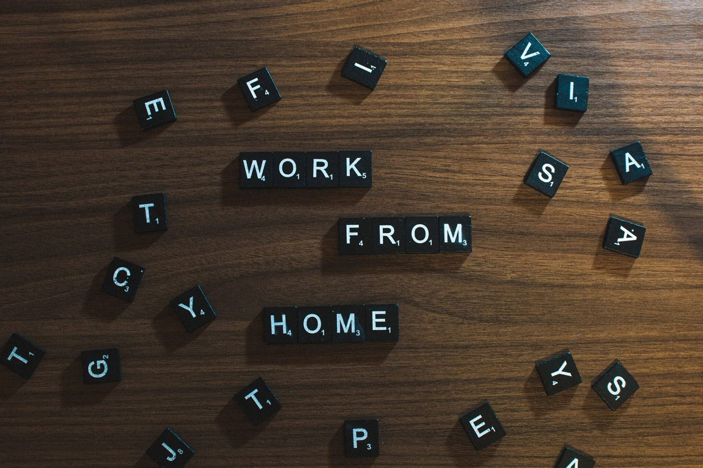

January 7, 2021
Reviewing my journey from 2020

2020 was a pretty intense year for about everyone. The pandemic changed the way we live and work and I hope, that you, as you are reading this, are healthy. Despite the obvious COVID-20 implications, 2020 was also a rollercoaster ride in my professional career. So I think it's Time for a (a bit delayed) recap 🙂
In my personal journey, 2020 started (again) with a lot of work. I was working with my team on a helpdesk system and were excited to get our first beta customers to verify, if whatever we built would be working on the market. From a technical perspective, we were switching our frontend from Angular to Vue, because we had several issues with Angulars Change Detection system that got slow - especially if there were dozens of translations on a screen. This came due to a requirement, that the translations needed to be changeable at runtime, which of course requires pipes that were impure. This again, had implications on "OnPush"-Components and...let's just say, it was a mess from 2019, that we were still cleaning up.
While we were deep in our migration, I unfortunately lost one of my developers (who was responsible for frontend design implementation) which threw us back for a decent amount of time. Additionally, as my company was a consulting company and we were missing consultants, it was pretty obvious that I would have to go out to the customers again while somehow try to still coordinate the implementation of the helpdesk. But guess what?
The Pandemic kicked in!
Personal contact was basically a no-go and all events were migrated to online-formats. I could participate at the "Digitaltag 2020" (Digital Day 2020) for my company and have a talk about monitoring Infrastructure, when people are now working from HomeOffice. Why this is important? Well, just think about the "regular" type of work, where all people are working from inside of the office and the traffic goes out. Now think of pandemic conditions, when maybe hundreds of people are working via VPN - a totally different game. It was an exciting experience, doing the talk only online in a fair-like format, but also a super interesting event.
In that time, I accidentally came across an Instagram ad for a "company builder" company. This company is building companies for other people / corps that have an idea - from MVP over market evaluation to the launch of the product. At that time, I was happy at my current company because I could basically decide everything technical, but the idea of building new structures / products and even companies is exactly what I like. So I wrote a CV...
...and had a great talk with the companies tech lead! I applied as a "senior development warlock" (following the job description😂) and gladly got an offer. Because the pros in comparison to my current job were too good (no more traveling, developing new products and so on), I took the job. In uncertain times of Corona. Phew!
It was a tough decision and I was a bit nervous, if this decision was right or wrong (especially considering the outside circumstances), but I said to myself that this nervousness only shows, that I'm leaving the comfort zone after working 6 years for my previous employer. And in the retrospective, it was really worth it!
Even before I joined the new company, I had looked into the ventures that were available and I found one, that had it's focus into green mobility - so I asked, if I could work for this venture. The codebase was okay and my colleagues were like a new family for me, so I was asked pretty soon afterwards, if I was interested to take the responsibility as a tech lead. Of course I said yes and since then, I am working for this startup. In the last quarter of the year, we altered so many processes, tech stack and so on, that I cannot even remember everything. I learned kubernetes and helm in a hurry and now I feel like I never worked somewhere else.
Although 2020 had of course very much downsides, for me personally I can recap it as a pretty successfull year. And I'm really excited where the professional journey will go, when my holidays are over😁